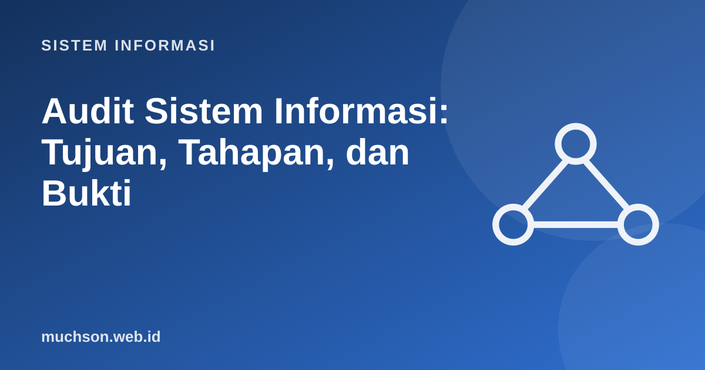

Beranda › Artikel › Sistem Informasi
Sistem InformasiAudit Sistem Informasi: Tujuan, Tahapan, dan Bukti
Audit sistem informasi menilai apakah sistem melindungi aset, menjaga integritas data, mencapai tujuan organisasi, dan beroperasi secara efektif dan efisien. Auditor tidak mencari siapa yang salah, melainkan memberi keyakinan independen kepada manajemen bahwa kontrol bekerja, atau menunjukkan di mana ia tidak bekerja.
Sebaiknya sudah paham: tata kelola TI, keamanan informasi

Setelah membaca dan mencoba materi ini, Anda mampu:
- menjelaskan tujuan dan jenis audit SI
- membedakan kontrol preventif, detektif, dan korektif serta kontrol umum dan aplikasi
- menguraikan tahapan audit dari perencanaan sampai pelaporan
- mengumpulkan dan menilai bukti audit
- menyusun temuan berstruktur: kondisi, kriteria, sebab, akibat, rekomendasi
Tujuan audit SI
Jenis kontrol
| Berdasarkan waktu | Fungsi | Contoh |
|---|---|---|
| Preventif | Mencegah masalah terjadi | Kata sandi, pemisahan tugas, validasi input, pelatihan |
| Detektif | Mengenali masalah yang telah terjadi | Log audit, rekonsiliasi, alarm intrusi, review rutin |
| Korektif | Memulihkan dan memperbaiki | Cadangan dan pemulihan, rencana tanggap insiden, patch |
| Berdasarkan cakupan | Cakupan | Contoh |
|---|---|---|
| Kontrol umum (ITGC) | Seluruh lingkungan TI | Manajemen akses, manajemen perubahan, operasi, cadangan |
| Kontrol aplikasi | Satu aplikasi dan transaksinya | Validasi input, total kendali, jejak audit, otorisasi transaksi |
Tahapan audit
Auditor harus independen dari yang diaudit, objektif, dan profesional. Standar umum antara lain ISACA IT Audit Framework (ITAF) dan, untuk audit internal, standar IIA. Sertifikasi populer: CISA (Certified Information Systems Auditor).
Bukti audit
| Jenis bukti | Contoh | Kekuatan |
|---|---|---|
| Pengamatan langsung | Melihat petugas menjalankan prosedur cadangan | Kuat, tetapi hanya saat diamati |
| Pemeriksaan dokumen dan konfigurasi | Kebijakan sandi, pengaturan server, tangkapan layar | Kuat bila dapat diverifikasi |
| Pengujian ulang (re-performance) | Auditor mencoba mengulang prosedur dan menilai hasilnya | Sangat kuat |
| Analisis data | Menganalisis seluruh log atau transaksi | Sangat kuat dan menjangkau populasi penuh |
| Wawancara | Pernyataan staf | Paling lemah bila berdiri sendiri; perlu dikonfirmasi |
Contoh: analisis data transaksi
Pada audit modern, auditor sering menganalisis seluruh populasi transaksi dengan skrip, bukan hanya sampel. Contoh: menguji kontrol pemisahan tugas dan transaksi mencurigakan pada data pembayaran.
import csv, io, collections
data = """id,pembuat,penyetuju,jumlah,tanggal,hari
1,rina,dodi,2500000,2026-10-05,Senin
2,rina,rina,4800000,2026-10-06,Selasa
3,eko,dodi,9990000,2026-10-07,Rabu
4,eko,rina,1200000,2026-10-10,Sabtu
5,dodi,eko,9950000,2026-10-12,Senin
6,rina,dodi,9980000,2026-10-13,Selasa
7,eko,eko,700000,2026-10-14,Rabu
"""
baris = list(csv.DictReader(io.StringIO(data)))
BATAS = 10_000_000 # ambang persetujuan direktur
print("1. Pelanggaran pemisahan tugas (pembuat = penyetuju):")
for b in baris:
if b["pembuat"] == b["penyetuju"]:
print(" - transaksi", b["id"], b["pembuat"], int(b["jumlah"]))
print("2. Transaksi tepat di bawah ambang (kemungkinan pemecahan nilai):")
for b in baris:
j = int(b["jumlah"])
if BATAS * 0.99 <= j < BATAS:
print(" - transaksi", b["id"], j)
print("3. Transaksi di akhir pekan:")
for b in baris:
if b["hari"] in ("Sabtu", "Minggu"):
print(" - transaksi", b["id"], b["tanggal"], b["hari"])
print("4. Ringkasan per pembuat:", dict(collections.Counter(b["pembuat"] for b in baris)))1. Pelanggaran pemisahan tugas (pembuat = penyetuju):
- transaksi 2 rina 4800000
- transaksi 7 eko 700000
2. Transaksi tepat di bawah ambang (kemungkinan pemecahan nilai):
- transaksi 3 9990000
- transaksi 5 9950000
- transaksi 6 9980000
3. Transaksi di akhir pekan:
- transaksi 4 2026-10-10 Sabtu
4. Ringkasan per pembuat: {'rina': 3, 'eko': 3, 'dodi': 1}
Sampling
| Metode | Cara | Kapan |
|---|---|---|
| Acak sederhana | Setiap item punya peluang sama | Populasi seragam |
| Sistematis | Setiap item ke-k setelah awal acak | Daftar berurutan |
| Stratifikasi | Bagi populasi dalam kelompok lalu sampel tiap kelompok | Populasi beragam (nilai kecil dan besar) |
| Berbasis risiko (judgmental) | Memilih item berisiko tinggi | Fokus pada area bermasalah (tidak dapat digeneralisasi) |
Menulis temuan
Kondisi : Tiga akun mantan karyawan masih aktif 60 hari setelah resign.
Kriteria : Kebijakan Keamanan No. 4.2: akun dinonaktifkan paling lambat 1 hari kerja setelah pemutusan hubungan kerja.
Sebab : Tidak ada pemberitahuan otomatis dari HR ke tim TI.
Akibat : Risiko akses tidak sah ke data pelanggan; ketidakpatuhan terhadap kebijakan.
Rekomendasi: Integrasikan proses off-boarding HR dengan penonaktifan akun; tinjau akun aktif setiap bulan.
Tanggapan manajemen: Disetujui; target selesai 31 Desember.1. Klasifikasikan: (a) pelatihan keamanan, (b) cadangan harian, (c) peringatan login gagal berulang.
2. Mengapa auditor harus independen?
3. Rancang pengujian untuk kontrol "akun mantan karyawan dinonaktifkan tepat waktu".
4. Apa kelemahan sampling berbasis risiko?
- Audit SI memberi keyakinan independen atas keamanan, integritas, efektivitas, efisiensi.
- Kontrol: preventif, detektif, korektif; umum dan aplikasi.
- Tahap: perencanaan, pemahaman, pengujian, evaluasi, pelaporan, tindak lanjut.
- Bukti harus cukup dan andal; analisis data memperluas cakupan.
- Temuan: kondisi, kriteria, sebab, akibat, rekomendasi.
Tanya jawab
Apa beda audit internal dan eksternal?
Apa itu penetration test?
Bagaimana memulai karier audit SI?
Referensi
- ISACA: Information Technology Assurance Framework (ITAF)
- ISACA: COBIT
- Ron Weber, Information Systems Control and Audit (Prentice Hall)
- Kenneth C. Laudon dan Jane P. Laudon, Management Information Systems: Managing the Digital Firm (Pearson)